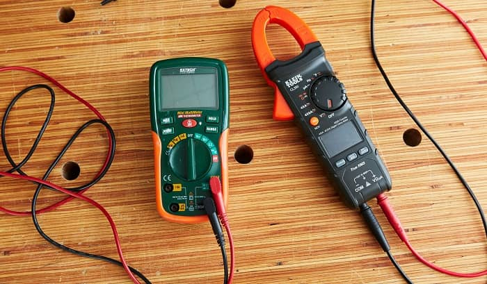
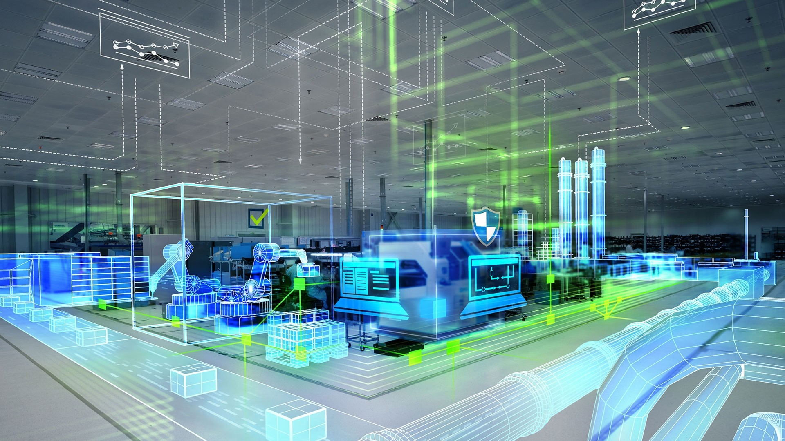
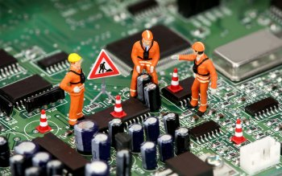

If we learn or Practice something continously , Then It becomes our productive habit.
Continuous learning is necessary to build new skills to grow one’s career path and that’s a given. However, retention is not guaranteed just because you learned something once. Continuous learning works only if you are revising what you learnt.
Considering the Above scenerio as a core this page gives 100 days content for Students who's passionate to become An Electrical or Electronics core Engineer.
This Course Consists of Various content starts from classification of elements to working of controller , which in turns makes Learner to get knowledge in Electrical and Electronics CORE
Topics Covered Here Such as Dual Nature of Electron, Types of Material based on Conductivity, RLC, AC/DC, Earthing, Grounding, 3Phase and SinglePhase, PF, Transformer, Star and Delta Connections, DC Machines, AC Machines, Motor Drivers, EDC, Power Electronics, Controllers, Digital and Analog Values, Sensors, Module, IOT, Project on IOT, Relays, Arduino IDE, Multimeter, PLC, CT, EV, Pico MicroController and Startups and Business ideas using Electrical and Electronics Projects.
Basic Knowledge on Above Topics required to become an Electrical Engineer.
As of April 2021 , Exactly 18 Students Completed this Curriculam in 100 Days as #100daysoflearning challenge.
To Learn Daily - Mindset need to Orginate.
Contents are provided in day basis.
Spare 15 Mins / day
Take a Look on content carefully and Take notes if needed.
Bookmark this page for Future References.
After Learning Take Assessment to know your Level of Knowledge based on the scale of 10.
In 1905,
it was Einstein who suggested the concept of light having a dual nature; particle and wave nature.
In a similar way, Louise de Broglie suggested that electron also exhibits a dual nature. Broglie also got Physics Noble Prize for his this theory.
Now, Bohr considered only the particle nature of electron and hence contradicted Broglie’s concept. Broglie also derived a mathematical expression to prove the wave nature of electron along with particle nature. He gave the following relation:-
λ =h/mν,
where λ is the wavelength of electron,
m is mass of an electron
and ν is the frequency.
According to Einstein’s mass energy relation,
E=mc2.
Broglie compared the above relation with the relation for energy of electron given by Bohr.
hν=mc2
as ν=c/λ
:- hc/λ=mc2
h=mc/λ or mν. (Hence proved)
Day 2 - Voltage
Voltage is the pressure from an electrical circuit's power source that pushes charged electrons (current) through a conducting loop, enabling them to do work such as illuminating a light.
In brief, voltage = pressure, and it is measured in volts (V).
The term recognizes Italian physicist Alessandro Volta (1745-1827), inventor of the voltaic pile—the forerunner of today's household battery.
In electricity's early days, voltage was known as electromotive force (emf).
This is why in equations such as Ohm's Law, voltage is represented by the symbol E.
Day 3 - Current
Electric current is defined as the rate of flow of negative charges of the conductor.
In other words, the continuous flow of electrons in an electric circuit is called an electric current.
The conducting material consists a large number of free electrons which move from one atom to the other at random.
Since the charge is measured in coulombs and time in seconds,
so the unit of electric current is coulomb/Sec (C/s) or amperes (A).
The amperes is the SI unit of the conductor.
The I is the symbolic representation of the current.
Day 4 - Resistance
Resistance is a measure of the opposition to current flow in an electrical circuit.
Resistance is measured in ohms, symbolized by the Greek letter omega (Ω).
Ohms are named after Georg Simon Ohm (1784-1854), a German physicist who studied the relationship between voltage, current and resistance.
He is credited for formulating Ohm's Law.
Day 5 - Capacitor
A capacitor (originally known as a condenser) is a passive two-terminal electrical component used to store energy electrostatically in an electric field. The forms of practical capacitors vary widely, but all contain at least two electrical conductors (plates) separated by a dielectric (i.e., insulator). The conductors can be thin films of metal, aluminum foil or disks, etc. The 'nonconducting' dielectric acts to increase the capacitor's charge capacity. A dielectric can be glass, ceramic, plastic film, air, paper, mica, etc. Capacitors are widely used as parts of electrical circuits in many common electrical devices. Unlike a resistor, a capacitor does not dissipate energy. Instead, a capacitor stores energy in the form of an electrostatic field between its plates.
When there is a potential difference across the conductors (e.g., when a capacitor is attached across a battery), an electric field develops across the dielectric, causing positive charge (+Q) to collect on one plate and negative charge (-Q) to collect on the other plate. If a battery has been attached to a capacitor for a sufficient amount of time, no current can flow through the capacitor. However, if an accelerating or alternating voltage is applied across the leads of the capacitor, a displacement current can flow.
An ideal capacitor is characterized by a single constant value for its capacitance. Capacitance is expressed as the ratio of the electric charge (Q) on each conductor to the potential difference (V) between them. The SI unit of capacitance is the farad (F), which is equal to one coulomb per volt (1 C/V). Typical capacitance values range from about 1 pF (10−12 F) to about 1 mF (10−3 F).
The capacitance is greater when there is a narrower separation between conductors and when the conductors have a larger surface area. In practice, the dielectric between the plates passes a small amount of leakage current and also has an electric field strength limit, known as the breakdown voltage. The conductors and leads introduce an undesired inductance and resistance.
Capacitors are widely used in electronic circuits for blocking direct current while allowing alternating current to pass. In analog filter networks, they smooth the output of power supplies. In resonant circuits they tune radios to particular frequencies. In electric power transmission systems they stabilize voltage and power flow.
Day 6 - Inductor
An inductor, also called a coil, choke, or reactor, is a passive two-terminal electrical component that stores energy in a magnetic field when electric current flows through it. An inductor typically consists of an insulated wire wound into a coil around a core.
When the current flowing through an inductor changes, the time-varying magnetic field induces an electromotive force (e.m.f.) (voltage) in the conductor, described by Faraday's law of induction. According to Lenz's law, the induced voltage has a polarity (direction) which opposes the change in current that created it. As a result, inductors oppose any changes in current through them.
An inductor is characterized by its inductance, which is the ratio of the voltage to the rate of change of current. In the International System of Units (SI), the unit of inductance is the henry (H) named for 19th century American scientist Joseph Henry. In the measurement of magnetic circuits, it is equivalent to weber/ampere. Inductors have values that typically range from 1 µH (10−6 H) to 20 H. Many inductors have a magnetic core made of iron or ferrite inside the coil, which serves to increase the magnetic field and thus the inductance. Along with capacitors and resistors, inductors are one of the three passive linear circuit elements that make up electronic circuits. Inductors are widely used in alternating current (AC) electronic equipment, particularly in radio equipment. They are used to block AC while allowing DC to pass; inductors designed for this purpose are called chokes. They are also used in electronic filters to separate signals of different frequencies, and in combination with capacitors to make tuned circuits, used to tune radio and TV receivers.
Inductors are used extensively in analog circuits and signal processing. Applications range from the use of large inductors in power supplies, which in conjunction with filter capacitors remove ripple which is a multiple of the mains frequency (or the switching frequency for switched-mode power supplies) from the direct current output, to the small inductance of the ferrite bead or torus installed around a cable to prevent radio frequency interference from being transmitted down the wire. Inductors are used as the energy storage device in many switched-mode power supplies to produce DC current. The inductor supplies energy to the circuit to keep current flowing during the "off" switching periods and enables topographies where the output voltage is higher than the input voltage.
Day 7 - Semi-Conductors
A semiconductor is a substance, usually a solid chemical element or compound, that can conduct electricity under some conditions but not others, making it a good medium for the control of electrical current. Its conductance varies depending on the current or voltage applied to a control electrode, or on the intensity of irradiation by infrared (IR), visible light, ultraviolet (UV), or X rays.
The specific properties of a semiconductor depend on the impurities, or dopants, added to it. An N-type semiconductor carries current mainly in the form of negatively-charged electrons, in a manner similar to the conduction of current in a wire. A P-type semiconductor carries current predominantly as electron deficiencies called holes. A hole has a positive electric charge, equal and opposite to the charge on an electron. In a semiconductor material, the flow of holes occurs in a direction opposite to the flow of electrons.
Elemental semiconductors include antimony, arsenic, boron, carbon, germanium, selenium, silicon, sulfur, and tellurium. Silicon is the best-known of these, forming the basis of most integrated circuits (ICs). Common semiconductor compounds include gallium arsenide, indium antimonide, and the oxides of most metals. Of these, gallium arsenide (GaAs) is widely used in low-noise, high-gain, weak-signal amplifying devices.
A semiconductor device can perform the function of a vacuum tube having hundreds of times its volume. A single integrated circuit (IC), such as a microprocessor chip, can do the work of a set of vacuum tubes that would fill a large building and require its own electric generating plant.
Day 8 - DC
Direct current (DC) power, as you may suss from the name, is a linear electrical current—it moves in a straight line.
Direct current can come from multiple sources, including batteries, solar cells, fuel cells, and some modified alternators. DC power can also be "made" from AC power by using a rectifier that converts AC to DC.
DC power is far more consistent in terms of voltage delivery, meaning that most electronics rely on it and use DC power sources such as batteries. Electronic devices can also convert AC power from outlets to DC power by using a rectifier, often built into a device's power supply. A transformer will also be used to raise or lower the voltage to a level appropriate for the device in question.
Not all electrical devices use DC power, though. Many devices, household appliances, especially, such as lamps, washing machines, and refrigerators, all use AC power, which is delivered directly from the power grid via power outlets.
Day 9 - AC
Alternating current (AC) power is the standard electricity that comes out of power outlets and is defined as a flow of charge that exhibits a periodic change in direction.
AC's current flow changes between positive and negative because of electrons—electrical currents come from the flow of these electrons, which can move in either a positive (upward) or negative (downward) direction. This is known as the sinusoidal AC wave, and this wave is caused when alternators at power plants create AC power.
Alternators create AC power by spinning a wire loop inside a magnetic field. Waves of alternating current are made when the wire moves into areas of different magnetic polarity—for example, the current changes direction when the wire spins from one of the magnetic field's poles to the other. This wave-like motion means that AC power can travel farther than DC power, a huge advantage when it comes to delivering power to consumers via power outlets.
Day 10 - Single Phase
In a Single Phase Power Supply, the power is distributed using only two wires called Phase and neutral. Since AC Power takes the shape of a sinusoidal wave, the voltage in a single phase supply peaks at 900 during the positive cycle and again at 2700 during the negative cycle.
The phase wire carries the current to the load and the neutral wire provides the return path of the current. Usually, the single phase voltage is 230V and the frequency is 50Hz (this depends on where you live).
Since the voltage in a single phase supply rises and falls (peaks and dips), a constant power cannot be delivered to the load.
Advantages
It is very common form of power supply to most small power requirement. Almost all residential supplies are single phase supplies as the domestic appliances require a small amount of power to run lights, fans, coolers, heaters, small air conditioners etc.
The design and operation of a single phase power supply system is often simple.
Depending on the region, a single phase supply is sufficient for loads up to 2500 Watts.
Disadvantages
Small single phase motors (usually less than 1kW) cannot start directly with the help of a single phase supply as there isn’t sufficient initial torque for the motor. So, additional circuitry like a Motor Starters (like a starter capacitor in fans and pumps) are needed for proper operation.
Heavy loads like industrial motors and other equipment cannot be run on a single phase supply.
Day 11 - 3Phase
A Three Phase Power Supply consists of three power wires (or the three phases). Additionally, depending on the type of the circuit (which there are two types: Star and Delta), you might or might not have a neutral wire. In a three phase power supply system, each AC Power Signal is 1200 out of phase with each other.
a three phase power supply, during one cycle of 3600, each phase would have peaked in voltage twice. Also, the power never drops to zero. This steady stream of power and ability to handle higher loads makes a three phase supply suitable for industrial and commercial operations.
As mentioned earlier, there are two types of circuit configurations in a three phase power supply. They are the Delta and the Star (Y or Wye). In Delta configuration, there is no neutral wire and all the high voltage systems use this configuration.
Coming to a star or wye configuration, there is a neutral wire (the common terminal/point of the star circuit) and a ground wire (sometimes).
The voltage between two phases in a three phase power supply is 415V while that between a phase and the neutral is 240V. Hence, you can provide three single phase supplies using a three phase supply (this is how it is normally done for residential and small business loads).
Advantages
For the same power, a three phase power supply uses les wire than a single phase power supply.
Three phase power supply is usually the preferred network for commercial and industrial loads. Although in some countries (like most European Countries, for example), even the residential supply is a three phase supply.
You can run larger loads very easily.
Large three phase motors (usually used in industries) do not require a starter as the phase difference in the three phase power supply will be sufficient to provide enough initial torque for the motor to start.
Almost all the power generated in a three phase power. Although there is a concept of multi-phase power, studies found that a three phase power supply is more economical and easy to produce.
The overall efficiency of the three phase power supply is higher when compared to that of a single phase power supply for the same load.
Day 12 - Grounding
The term grounding is commonly used in the electrical industry to mean both “equipment grounding” and “system grounding”. Equipment grounding means the connection of earth ground to non-current carrying conductive materials such as conduit, cable trays, junction boxes, enclosures, and motor frames.
System grounding means the connection of earth ground to the neutral points of current carrying conductors such as the neutral point of a circuit, a transformer, rotating machinery, or a system, either solidly or with a current-limiting device.
System grounding, or the intentional connection of a phase or neutral conductor to earth, is for the purpose of controlling the voltage to earth, or ground, within predictable limits. It also provides for a flow of current that will allow detection of an unwanted connection between system conductors and ground [a ground fault].
A ground fault is an unwanted connection between the system conductors and ground. Ground faults often go unnoticed and cause havoc on plant production processes. Shutting down power and damaging equipment, ground faults disrupt the flow of products, leading to hours or even days of lost productivity.
Ground faults cause serious damage to equipment and to your processes. During a fault condition, equipment can be damaged and processes shut down, seriously affecting your bottom line.
Day 13 - Earthing
Definition: The process of transferring the immediate discharge of the electrical energy directly to the earth by the help of the low resistance wire is known as the electrical earthing. The electrical earthing is done by connecting the non-current carrying part of the equipment or neutral of supply system to the ground.
Mostly, the galvanised iron is used for the earthing. The earthing provides the simple path to the leakage current. The shortcircuit current of the equipment passes to the earth which has zero potential. Thus, protects the system and equipment from damage.
Types of Electrical Earthing
The electrical equipment mainly consists of two non-current carrying parts. These parts are neutral of the system or frame of the electrical equipment. From the earthing of these two non-current carrying parts of the electrical system earthing can be classified into two types.
Neutral Earthing
Equipment Earthing.
Neutral Earthing
In neutral earthing, the neutral of the system is directly connected to earth by the help of the GI wire. The neutral earthing is also called the system earthing. Such type of earthing is mostly provided to the system which has star winding. For example, the neutral earthing is provided in the generator, transformer, motor etc.
Equipment Earthing
Such type of earthing is provided to the electrical equipment. The non-current carrying part of the equipment like their metallic frame is connected to the earth by the help of the conducting wire. If any fault occurs in the apparatus, the short-circuit current to pass the earth by the help of wire. Thus, protect the system from damage.
Importance of Earthing
The earthing is essential because of the following reasons
The earthing protects the personnel from the shortcircuit current.
The earthing provides the easiest path to the flow of shortcircuit current even after the failure of the insulation.
The earthing protects the apparatus and personnel from the high voltage surges and lightning discharge.
Earthing can be done by electrically connecting the respective parts in the installation to some system of electrical conductors or electrodes placed near the soil or below the ground level. The earthing mat or electrode under the ground level have flat iron riser through which all the non-current-carrying metallic parts of the equipment are connected.
When the fault occurs the fault current from the equipment flows through the earthing system to the earth and thereby protect the equipment from the fault current. At the time of the fault, the earth mat conductors rise to the voltage which is equal to the resistance of the earth mat multiplied by a ground fault.
The contacting assembly is called earthing. The metallic conductors connecting the parts of the installation with the earthing are called electrical connection. The earthing and the earthing connection together called the earthing system.
Day 14 - Power
In physics, an electric power measure of the rate of electrical energy transfer by an electric circuit per unit time. Denoted by P and measured using the SI unit of power is the watt or one joule per second. Electric power is commonly supplied by sources such as electric batteries and produced by electric generators.
Electric power is the rate at which work is done or energy is transformed into an electrical circuit. Simply put, it is a measure of how much energy is used in a span of time.
Symbol - P
SI Unit - Watt, joule per second
It is a Scalar Quantity
Formula :
P=VI
where,
P is the power
V is the potential difference in the circuit
I is the electric current
Power can also be written as
P = I2R
P = V2/ R
The above two expressions are got by using Ohms law, Where, Voltage, current, and resistance are related by the following relation
V = IR
Where,
R is the resistance in the circuit.
V is the potential difference in the circuit
I is the electric current
Since power is the rate of energy consumption, energy can directly be calculated using
P=E/t
Where,
E is the energy consumption (in Joules)
t is the time in seconds
P=VQ/t
Where,
Q is the charge (in Coulombs)
V is Potential difference in volts
t is the time in seconds
Day 15 - Power Factor
Power factor is an expression of energy efficiency. It is usually expressed as a percentage—and the lower the percentage, the less efficient power usage is.
Power factor (PF) is the ratio of working power, measured in kilowatts (kW), to apparent power, measured in kilovolt amperes (kVA). Apparent power, also known as demand, is the measure of the amount of power used to run machinery and equipment during a certain period. It is found by multiplying (kVA = V x A). The result is expressed as kVA units.
PF expresses the ratio of true power used in a circuit to the apparent power delivered to the circuit. A 96% power factor demonstrates more efficiency than a 75% power factor. PF below 95% is considered inefficient in many regions.
The Bear Analogy
Beer is active power (kW)—the useful power, or the liquid beer, is the energy that is doing work. This is the part you want.
Foam is reactive power (kVAR)—the foam is wasted power or lost power. It’s the energy being produced that isn't doing any work, such as the production of heat or vibration.
The mug is apparent power (kVA)—the mug is the demand power, or the power being delivered by the utility.
If a circuit were 100% efficient, demand would be equal to the power available. When demand is greater than the power available, a strain is placed on the utility system. Many utilities add a demand charge to the bills of large customers to offset differences between supply and demand (where supply is lower than demand). For most utilities, demand is calculated based on the average load placed within 15 to 30 minutes. If demand requirements are irregular, the utility must have more reserve capacity available than if load requirements remain constant.
Peak demand is when demand is at its highest. The challenge for utilities is delivering power to handle every customer’s peaks. Using power at the very moment it is in highest demand can disrupt overall supply unless there are enough reserves. Therefore, utilities bill for peak demand. For some larger customers, utilities might even take the largest peak and apply it across the full billing period.
Utilities apply surcharges to companies with a lower power factor. The costs of lower efficiency can be steep—akin to driving a gas-guzzling car. The lower the power factor, the less efficient the circuit, and the higher the overall operating cost. The higher the operating cost, the higher the likelihood that utilities will penalize a customer for overutilization. In most ac circuits there is never power factor equal to one because there is always some impedance (interference) on the power lines.
How to calculate power factor
To calculate power factor, you need a power quality analyzer or power analyzer that measures both working power (kW) and apparent power (kVA), and to calculate the ratio of kW/kVA.
The power factor formula can be expressed in other ways:
PF = (True power)/(Apparent power)
OR
PF = W/VA
Where watts measure useful power while VA measures supplied power. The ratio of the two is essentially useful power to supplied power, or
power factor compares the real power being consumed to the apparent power, or demand of the load. The power available to perform work is called real power. You can avoid power factor penalties by correcting for power factor.
Poor power factor means that you’re using power inefficiently. This matters to companies because it can result in:
Heat damage to insulation and other circuit components
Reduction in the amount of available useful power
A required increase in conductor and equipment sizes
Finally, power factor increases the overall cost of a power distribution system because the lower power factor requires a higher current to supply the loads.
Day 16 - Transformers
A transformer is defined as a passive electrical device that transfers electrical energy from one circuit to another through the process of electromagnetic induction. It is most commonly used to increase (‘step up’) or decrease (‘step down’) voltage levels between circuits.
Working Principle of Transformer
The working principle of a transformer is very simple. Mutual induction between two or more windings (also known as coils) allows for electrical energy to be transferred between circuits. This principle is explained in further detail below.
Transformer Theory
Say you have one winding (also known as a coil) which is supplied by an alternating electrical source. The alternating current through the winding produces a continually changing and alternating flux that surrounds the winding.
If another winding is brought close to this winding, some portion of this alternating flux will link with the second winding. As this flux is continually changing in its amplitude and direction, there must be a changing flux linkage in the second winding or coil.
According to Faraday’s law of electromagnetic induction, there will be an EMF induced in the second winding. If the circuit of this secondary winding is closed, then a current will flow through it. This is the basic working principle of a transformer.
The winding which receives electrical power from the source is known as the ‘primary winding’. In the diagram below this is the ‘First Coil’.
The winding which gives the desired output voltage due to mutual induction is commonly known as the ‘secondary winding’. This is the ‘Second Coil’ in the diagram above.
A transformer that increases voltage between the primary to secondary windings is defined as a step-up transformer. Conversely, a transformer that decreases voltage between the primary to secondary windings is defined as a step-down transformer.
Whether the transformer increases or decreases the voltage level depends on the relative number of turns between the primary and secondary side of the transformer.
If there are more turns on the primary coil than the secondary coil than the voltage will decrease (step down).
If there are less turns on the primary coil than the secondary coil than the voltage will increase (step up).
While the diagram of the transformer above is theoretically possible in an ideal transformer – it is not very practical. This is because in the open air only a very tiny portion of the flux produced from the first coil will link with the second coil. So the current that flows through the closed circuit connected to the secondary winding will be extremely small (and difficult to measure).
The rate of change of flux linkage depends upon the amount of linked flux with the second winding. So ideally almost all of the flux of primary winding should link to the secondary winding. This is effectively and efficiently done by using a core type transformer. This provides a low reluctance path common to both of the windings.
The purpose of the transformer core is to provide a low reluctance path, through which the maximum amount of flux produced by the primary winding is passed through and linked with the secondary winding.
The current that initially passes through the transformer when it is switched on is known as the transformer inrush current.
Day 17 - Star Connection
A star connection is a connection used in a polyphase electrical device or system of devices in which the windings each have one end connected to a common junction, and the other end to a separate terminal.
The line voltage is applied to one end of each of the three windings, with the other end bridged together, effectively connecting the windings in a star connection.
The power transformer has a delta connection in the primary winding and a star connection in the secondary winding.
A star connection is a connection used in a polyphase electrical device in which the windings each have one end connected to a common junction, and the other end to a separate terminal.
Day 18 - Delta Connection
a connection used in a three-phase electrical system in which three elements in series form a triangle, the supply being input and output at the three junctions
A delta connection is a connection used in a three-phase electrical system in which three elements in series form a triangle, the supply being input and output at the three junctions.
In the US, which uses mostly single-phase transformers, three identical single-phase transformers are often wired in a transformer bank in a delta connection, to create a three-phase transformer.
The delta connection consists of three-phase windings connected end-to-end which are 120° apart from each other electrically.
A delta connection is a connection used in a three-phase electrical system in which three elements in series form a triangle, the supply being input and output at the three junctions.
Day 19 - DC Machines
A DC Machine is an electro-mechanical energy conversion device. There are two types of DC machines; one is the DC generator, and another one is known as DC motor.
A DC generator converts mechanical power (ωT) into DC electrical power (EI), whereas, a DC motor converts d.c electrical power into mechanical power. The AC motor is invariably applied in the industry for conversion of electrical power into mechanical power, but at the places where the wide range of speeds and good speed regulation is required, like in electric traction system, a DC motor is used.
The construction of the dc motor and generator is nearly the same. The generator is employed in a very protected way. Hence there is an open construction type. But the motor is used in the location where they are exposed to dust and moisture, and hence it requires enclosures for example dirt proof, fireproof, etc. according to requirement.
Although the battery is an important source of DC electric power, it can only supply limited power to any machines. There are some applications where large quantities of DC power are required, such as electroplating, electrolysis, etc. Hence, at such places, DC generators are used to deliver power.
Day 20 - AC Machines
AC machines are motors that convert ac electric energy to mechanical energy and generators that convert mechanical energy to ac electric energy. The two major classes of ac machines are synchronous and induction machines. The field current of synchronous machines (motors and generators) is supplied by a separate dc power source while the field current of induction machines is supplied by magnetic induction (transformer action) into the field windings.
AC machines differ from dc machines by having their armature windings almost always located on the stator while their field windings are located on the rotor. A set of three-phase ac voltages is induced into the stator armature windings of an ac machine by the rotating magnetic field from the rotor field windings (generator action). Conversely, a set of three-phase currents flowing in the stator armature windings produces a rotating magnetic field within the stator. This magnetic field interacts with the rotor magnetic field to produce the torque in the machine (motor action).
The main principle of ac machine operation is this: A three-phase set of currents, flowing in an armature windings, each of equal magnitude and differing in phase by 120 , produces a rotating magnetic field of constant magnitude.
Day 21 - Motor Drivers
Motor drives are circuits used to run a motor. In other words, they are commonly used for motor interfacing. These drive circuits can be easily interfaced with the motor and their selection depends upon the type of motor being used and their ratings (current, voltage).
They are basically current amplifiers which accept the low current signal from the controller and convert it into a high current signal which helps to drive the motor.
Day 22 - Electron Devices
Electronic devices are components for controlling the flow of electrical currents for the purpose of information processing and system control. Prominent examples include transistors and diodes. Electronic devices are usually small and can be grouped together into packages called integrated circuits. This miniaturization is central to the modern electronics boom.
Day 23 - Power Electronics
Power Electronics is a branch of Electrical Engineering which deals with power conversion from one from to another form using Inductors, Capacitors, Semiconductor devices (Diode, Thyristor, MOSFET, IGBT etc.). The power may be from mW(point on load applications) to MW(Power Systems).
As you can observe that the Power Electronics is the centre of all branches. If you need to combine any two fields of System&Control, Power&Energy, Electronics&Devices you need to use Power Electronics.
Energy Conversion can take place in any form.
The basic conversions are
AC - AC (Cycloconverters)
DC - DC (Converters)
DC - AC (Inverters)
AC - DC (Rectifiers)
Power electronics is about changing one form of electricity to another form of electricity.
Day 24 - Digital Signals
A digital signal is a signal that is used to represent data as a sequence of separate values at any point in time. It can only take on one of a fixed number of values. This type of signal represents a real number within a constant range of values.
Digital signal are continuous signals
This type of electronic l signals can be processed and transmitted better compared to analog signal.
Digital signals are versatile, so it is widely used.
The accuracy of the digital signal is better than that of the analog signal.
Day 25 - Analog Signals
Analog signal is a continuous signal in which one time-varying quantity represents another time-based variable. These kind of signals works with physical values and natural phenomena such as earthquake, frequency, volcano, speed of wind, weight, lighting, etc.
These type of electronic signals are time-varying
Minimum and maximum values which is either positive or negative.
It can be either periodic or non-periodic.
Analog Signal works on continuous data.
The accuracy of the analog signal is not high when compared to the digital signal.
It helps you to measure natural or physical values.
Analog signal output form is like Curve, Line, or Graph, so it may not be meaningful to all.
Day 26 - Micro Controller
A microcontroller is an integrated circuit (IC) device used for controlling other portions of an electronic system, usually via a microprocessor unit (MPU), memory, and some peripherals. These devices are optimized for embedded applications that require both processing functionality and agile, responsive interaction with digital, analog, or electromechanical components.
The most common way to refer to this category of integrated circuits is “microcontroller" but the abbreviation “MCU” is used interchangeably as it stands for “microcontroller unit”. You may also occasionally see “µC” (where the Greek letter mu replaces “micro”).
“Microcontroller” is a well-chosen name because it emphasizes defining characteristics of this product category. The prefix “micro” implies smallness and the term "controller" here implies an enhanced ability to perform control functions. As stated above, this functionality is the result of combining a digital processor and digital memory with additional hardware that is specifically designed to help the microcontroller interact with other components.
Day 27 - Sensors
A sensor is a device that detects and responds to some type of input from the physical environment. The specific input could be light, heat, motion, moisture, pressure, or any one of a great number of other environmental phenomena. The output is generally a signal that is converted to human-readable display at the sensor location or transmitted electronically over a network for reading or further processing.
Day 28 - IOT
The term Internet of Things generally refers to scenarios where network connectivity and computing capability extends to objects, sensors and everyday items not normally considered computers, allowing these devices to generate, exchange and consume data with minimal human intervention. There is, however, no single, universal definition.
Day 29 - Sample IOT Project
The Internet of Things, or IoT, refers to the billions of physical devices around the world that are now connected to the internet, all collecting and sharing data. Thanks to the arrival of super-cheap computer chips and the ubiquity of wireless networks, it's possible to turn anything, from something as small as a pill to something as big as an aeroplane, into a part of the IoT. Connecting up all these different objects and adding sensors to them adds a level of digital intelligence to devices that would be otherwise dumb, enabling them to communicate real-time data without involving a human being. The Internet of Things is making the fabric of the world around us more smarter and more responsive, merging the digital and physical universes.
Day 30 - Relays
Relays are electric switches that use electromagnetism to convert small electrical stimuli into larger currents.These conversions occur when electrical inputs activate electromagnets to either form or break existing circuits.By leveraging weak inputs to power stronger currents, relays effectively act as either a switch or an amplifier for the electric circuit, depending on the desired application.
Day 31 - Diodes
A diode may be the simplest of all semiconductor components, however, it performs many critical functions, including the control of the flow of an electrical current.
A diode is a device that allows current to flow in one direction but not the other. This is achieved through a built-in electric field. Although the earliest diodes consisted of red-hot wires running through the middle of a metal cylinder which itself was located inside of a glass vacuum tube, modern diodes are semiconductor diodes. As the name suggests, these are made from semiconductor materials, primarily doped silicon.
Despite being nothing more than a simple two-pin semiconductor devices, diodes are vital to modern electronics.
Some of their most common applications include turning AC to DC, isolating signals from a supply, and mixing signals. A diode has two ‘sides’ and each side is doped differently. One side is the “p-side”, this has a positive charge.
The other side is the “n-side”, this has a negative charge. Both of these sides are layered together to form what is known as the “n-p junction” where they meet.
When a negative charge is applied to the n-side and a positive to the p-side, electrons ‘jump’ over this junction and current flows in one direction only. This is the diode’s core property; conventional current flows from the positive side to the negative side in that direction only. At the same time, electrons flow in a single direction only from the negative side to the positive side. This is because electrons are negatively charged and are attracted to the positive end of a battery.
Diodes are extremely useful components and are widely used in modern technology.
Perhaps the most widely known modern application for diodes is in LEDs. These use a special kind of doping so that when an electron crosses the n-p junction, a photon is emitted, which creates light. This is because LEDs glow in the presence of a positive voltage. The type of doping can be varied so that any frequency (colour) of light can be emitted, from infrared to ultraviolet.
Sensitive electronic devices need to be protected from surges in voltage, and the diode is perfect for this. When used as voltage protection devices, diodes are nonconducting, however, they immediately short any high-voltage spike by sending it to the ground where it cannot harm sensitive integrated circuits. For this use, specialized diodes known as “transient voltage suppressors” are designed. These can handle large power spikes over short time periods which would normally damage sensitive components.
Day 32 - Transistors
The transistor is a semiconductor device which transfers a weak signal from low resistance circuit to high resistance circuit. The words trans mean transfer property and istor mean resistance property offered to the junctions. In other words, it is a switching device which regulates and amplify the electrical signal likes voltage or current.
The transistor consists two PN diode connected back to back. It has three terminals namely emitter, base and collector. The base is the middle section which is made up of thin layers. The right part of the diode is called emitter diode and the left part is called collector-base diode. These names are given as per the common terminal of the transistor. The emitter based junction of the transistor is connected to forward biased and the collector-base junction is connected in reverse bias which offers a high resistance.
There are two types of transistor, namely NPN transistor and PNP transistor. The transistor which has two blocks of n-type semiconductor material and one block of P-type semiconductor material is known as NPN transistor. Similarly, if the material has one layer of N-type material and two layers of P-type material then it is called PNP transistor.
Transistor Terminals
The transistor has three terminals namely, emitter, collector and base. The terminals of the diode are explained below in details.
transistor-terminal
Emitter – The section that supplies the large section of majority charge carrier is called emitter. The emitter is alway connected in forward biased with respect to the base so that it supplies the majority charge carrier to the base. The emitter-base junction injects a large amount of majority charge carrier into the base because it is heavily doped and moderate in size.
Collector – The section which collects the major portion of the majority charge carrier supplied by the emitter is called a collector. The collector-base junction is always in reverse bias. Its main function is to remove the majority charges from its junction with the base. The collector section of the transistor is moderately doped, but larger in size so that it can collect most of the charge carrier supplied by the emitter.
Base – The middle section of the transistor is known as the base. The base forms two circuits, the input circuit with the emitter and the output circuit with the collector. The emitter-base circuit is in forward biased and offered the low resistance to the circuit. The collector-base junction is in reverse bias and offers the higher resistance to the circuit. The base of the transistor is lightly doped and very thin due to which it offers the majority charge carrier to the base.
Working of Transistor
Usually, silicon is used for making the transistor because of their high voltage rating, greater current and less temperature sensitivity. The emitter-base section kept in forward biased constitutes the base current which flows through the base region. The magnitude of the base current is very small. The base current causes the electrons to move into the collector region or create a hole in the base region.
transistor-working-principle
The base of the transistor is very thin and lightly doped because of which it has less number of electrons as compared to the emitter. The few electrons of the emitter are combined with the hole of the base region and the remaining electrons are moved towards the collector region and constitute the collector current. Thus we can say that the large collector current is obtained by varying the base region.
Transistor Operating Conditions
When the emitter junction is in forward biased and the collector junction is in reverse bias, then it is said to be in the active region. The transistor has two junctions which can be biased in different ways.
F = Forward Biased , R = Reversed Biased
FR – In this case, the emitter-base junction is connected in forward biased and the collector-base junction is connected in reverse biased. The transistor is in the active region and the collector current is depend on the emitter current. The transistor, which operates in this region is used for amplification.
FF – In this condition, both the junction is in forward biased. The transistor is in saturation and the collector current becomes independent of the base current. The transistors act like a closed switch.
RR – Both the current are in reverse biased. The emitter does not supply the majority charge carrier to the base and carriers current are not collected by the collector. Thus the transistors act like a closed switch.
RF – The emitter-base junction is in reverse bias and the collector-base junction is kept in forward biased. As the collector is lightly doped as compared to the emitter junction it does not supply the majority charge carrier to the base. Hence poor transistor action is achieved.
Day 33 - Electronic Switches
In electronics, an electronic switch is an electronic component or device that can switch an electrical circuit, interrupting the current or diverting it from one conductor to another. Electronic switches are considered binary devices because they can be on or completely off.
An electronic switch is essentially just a switch that uses an electrical current, to turn on, usually turning off when the current is turned off. Some applications of switches can be quite inconvenient for someone to go and press a button to turn on or off, such as for the starter motor in a car, or the "turn off nuclear meltdown" button inside a nuclear reactor, or in an electronics project, a small low power device such as a receiver, must somehow power a large energy guzzling component, like the motor in a garage door opener. And others just want to control their houses with their computer's, which could never possible supply the 240v/120v mains needed to run some appliances.
Day 34 - Arduino UNO - Basics
Arduino UNO is a Microcontroller board designed by Arduino.cc in Italy.
It used Atmega328 Microcontroller which acts as a brain of this board.
Arduino Bootloader is installed on Atmega328 which makes it capable to work with Arduino Programming.
Arduino is an open-source platform so it has a lot of support from third-party developers.
Anyone can design its Libraries for different sensors and modules.
If you are working on some project and you want to use this Arduino UNO board then you should know about its Pinout.
Arduino UNO has 20 input/output pins.
Among these 20 pins, we have 14 digital pins.
The remaining 6 pins are analogue pins.
It also has 6 PWM pins which are used for Pulse Width Modulation.
Arduino UNO supports follow 3 communication protocols: Serial Protocol , I2C Protocol and SPI Protocol
So, these digital and analogue pins are capable of multiple functions and it totally depends on your projects' requirement. If you want to use SPI modules then you have to stick to SPI Pins and if you want to interface Serial module like GSMm or GPS then you need to use Serial Pins. We can also design software serial as well.
Memories are of main concern while selecting a microcontroller for your project. If you have bigger data or code etc to save then you shouldn't select this one, I would recommend Arduino Mega. So, let's have a look at its memory features:
It has a flash memory of 32Kb.
Arduino UNO has SRAM of 2KB.
EEPROM memory of UNO is 1Kb.
Bootloader of 2Kb is installed so we are left with 30kb Flash memory.
Arduino UNO has numerous applications in our everyday life. It's the most commonly used Microcontroller board. Few of its working fields are as follows: , Embedded Systems , Control Systems , Robotics , Instrumentation and Condition Monitoring
Day 35 to 50 - Complete Project on Controllers
The Above Video is a sample project where GPS Location of the place is found using Node MCU (The Video is in Tamil)
Day 51 - Multimeter Uses

The handheld digital multimeter (DMM) is a basic tool for ham radio applications. It is called a multimeter because it combines multiple meter functions into one unit: voltmeter, ammeter and ohmmeter. These days, almost all of these meters are digital, which makes them very easy to use.
Here is a list of 10 things you can do with a DMM.
1. Check the power supply voltage on the new power supply you just purchased.
2. See if your HT battery pack is fully charged.
3. Measure the current that your transceiver draws to estimate how long your emergency power system will last during a blackout.
4. Sort the bag of resistors you purchased at the swapfest.
5. Check a fuse to see if it is blown.
6. Troubleshoot your broken rig by checking the bias voltages against the service manual.
7. Figure out if the AA batteries the kids left for you are dead.
8. Verify that your coax is not shorted between the shield and center conductor.
9. Check the level of the power line voltage in the ham shack.
10. Check for good DC continuity between the ends of the TNC cable you just soldered.
Day 52 - Working of Multimeter
An ammeter measures current, an ohmmeter allows you to determine resistance, and a voltmeter is used to measure voltage between two points. Multimeters combine all three functions in a single instrument. (Note: You will need to be able to recognize common electronic schematic symbols for components to fully understand how to use your multimeter.)
Your multimeter’s ammeter function is used to measure the number of electrons passing a given point for a certain amount of time (i.e. current). The units in this measurement are known as amperes. Your multimeter can check how many amperes, e.g., an appliance is drawing so that you can tell if it is drawing excessive current, which will cause a circuit breaker to open.
The ohmmeter function measures electrical resistance — the opposition to an electric current — and uses units known as ohms. An electrical circuit will have a resistance of zero or near zero ohms if it is short-circuited. When a circuit is open it has infinite resistance and no current flow.
The voltmeter function of your multimeter measures the electrical potential between two points in volts and is especially useful for checking whether a battery is nearly dead.
Furthermore, multimeters enable you to measure current and voltage in two different modes: alternating current (AC) and direct current (DC). Household outlets almost always use alternating current. Keep in mind that different countries have different standards when it comes to AC voltage, which is why many travelers find that their electronics malfunction in other parts of the world. If you’re not sure of the voltage you can use the AC voltmeter function of your multimeter to find out.
Household outlets supply AC current, but batteries supply DC current. You must take the mode of current of what you are measuring into account and set your multimeter to the correct mode to accurately measure electrical or electronic circuits.
Day 53 - Soldering
Soldering is a joining process used to join different types of metals together by melting solder. Solder is a metal alloy usually made of tin and lead which is melted using a hot iron. The iron is heated to temperatures above 600 degrees fahrenheit which then cools to create a strong electrical bond.
Solder is melted by using heat from an iron connected to a temperature controller. It is heated up to temperatures beyond its melting point at around 600 degrees fahrenheit which then causes it to melt, which then cools creating the soldered joint.
As well as creating strong electrical joints solder can also be removed using a desoldering tool.
Solder is a metal alloy used to create strong permanent bonds; such as copper joining in circuit boards and copper pipe joints. It can also be supplied in two different types and diameters, lead and lead free and also can be between .032” and .062”. Inside the solder core is the flux, a material used to strengthen and improve its mechanical properties.
A soldering iron is a hand tool used to heat solder, usually from an electrical supply at high temperatures above the melting point of the metal alloy. This allows for the solder to flow between the workpieces needing to be joined.
This soldering tool is made up of an insulated handle and a heated pointed metal iron tip. Good soldering is influenced by how clean the tip of your soldering iron is. To maintain cleanliness, a user will hold the soldering iron and use a wet sponge to clean the soldering iron tip prior to soldering components or making soldered connections.
In addition to the soldering iron, solder suckers are an important part of the soldering setup. If excessive solder is applied, these small tools are used to remove the solder, leaving only that desired.
Day 54 - Basic Tools
1. MULTIMETER
The multimeter measures multiple electrical properties, including voltage, current, resistance and DC voltage and current. Multimeters are available as analog or digital devices and the newer ones feature some sophisticated bells and whistles such as Bluetooth and thermal imaging cameras.
2. VOLTAGE TESTER
It’s crucial to know when a wire or device is ‘live’ as if you work on wire while live, there can be dangerous consequences. Used for a quick safety check to ensure there is no voltage in an electrical wire or device, voltage testers are an absolute must. If you can, grab a non-contact voltage tester. These can detect electricity without touching the wire or outlet.
3. WIRE STRIPPERS
With a variety of holes to ensure you can work with different sizes of wire, strippers are used to cut and strip insulation from electrical wire. The handle should always be comfortable to hold and easy to grip. Some strippers will even include cutting teeth so you can trim the wire ends at the same time.
4. CIRCUIT FINDER
It’s not always easy to find the circuit directory in every single home and at times, when present, the service panel is very rarely matched with the complementary breaker. Thank goodness for circuit finders – simply plug the transmitter into the outlet and the detector will figure out where the matching directory is. Circuit finders are also handy to simply trace a circuit.
5. SCREWDRIVERS AND NUT DRIVERS SPECIFIC TO ELECTRICIANS
They may not seem like trade-specific tools and indeed, they’re not. In fact, most people around the world will have some form of screw or nut driver in their own personal toolbox. However, there are some screw and nut drivers that have been manufactured specifically for electrical work.
Failng the specific drivers, ensure you always shave Philips head and flathead screwdrivers with you at all times. Whether it’s removing and installing cover plates, outlets, switches or other devices, they’ll always come in handy. Ensure you have a range of sizes as well.
6. PLIERS
A good pair of pliers is a must-have for any and every electrician. Handles should be easy and comfortable to grip and should open and close smoothly. It’s also a good idea to have several sizes to accommodation different jobs. Besides from the traditional pair of pliers, there are others that will most definitely come in handy.
Side-cutting and diagonal cutting – used to cut wires to specific lengths.
Needle-nose or long nose – with thin, grasping ends, these pliers make it easier to reach small spaces.
Tongue and groove – used to remove knockouts from metal electrical boxes and tighten clamps.
7. FISH TAPE
Used to pull and push stranded or solid wire through conduit, fish tape will always be useful. It can be retracted and deployed as needed as it comes on a reel which always means it’s easy to grip.
8. TAPE MEASURE
When it comes to tape measures, there is such a huge variety of styles that it really is a personal choice. Regardless of whether you like it fatter, bulkier, slimmer or one that won’t buckle over long distances, a tape measure is toolkit 101.
9. HAMMER
These are especially important if you’re working on a construction zone. Claw hammers can be used to remove nails and wood pieces.
10. LEVEL
Make sure your work is level and plumb before handing it over to the customer.
11. TORCH
It can be very dark in places where electrical work is most needed. It’s convenient as well as safe.
12. UTILITY KNIFE
One of these will always come in handy.
Day 55 - Nikola Tesla - Inventions
Tesla was one of the most prolific and innovative engineers and inventors of the nineteenth and twentieth centuries. As previously mentioned, his illustrious inventive endeavors began in the early-1880s while he was working at the Central Telegraph Office in Budapest.
However, there is little, if any, information about attempts to file any patents for his work at this time. Tesla's first-ever confirmed patent, for the electric arc lamp, was filed after his arrival in the United States, in March of 1884.
The vast majority of his patents were filed after he left Edison's employ and founded his own company, Tesla Electric Light and Manufacturing. Up until 1928, Tesla appears to have protected many of his inventions with patents all across the world.
During this period, his first patent was the US patent no. 334,823 for a commutator for dynamo-electric machines, and according to the Tesla Foundation, his last was the last US patent no. 1,655,114 for an apparatus for aerial transport.
According to U.S. patent records, Tesla held around 112 registered U.S. patents for his work. It is known that Tesla filed a number of patents in other countries, but some of these records are harder to definitively quantify with certainty today.
It is believed that Nikola Tesla held somewhere in the order of 196 patents for his tech, across 26 countries worldwide. Of the non-US patents, the largest number appears to have been filed in Great Britain, with 30 patents granted.
Tesla also held about 10 patents in France, 27 in Belgium, 21 in Germany, 19 in Italy, and 15 in Austria. He also appears to have filed a handful of patents in a number of other countries, including Spain, Belgium, Brazil, and Italy.
The Tesla Foundation has estimated that Tesla held a total of over 300 patents across five continents. However, it must be born in mind that many of these patents were for the same inventions rather than unique developments.
Interestingly, according to an analysis of his patents, his most protected invention was his pump and turbine (US patents 1,061,142 and 1,061,206). For these, he was granted 23 patents in 22 countries.
Of all his patents, 54 were granted in the United States. 1889 appears to have been his most prolific year, with a total fo 39 patents filed relating to his polyphase system.
Tesla also either did not file patent protection for a number of other inventions he came up with throughout his career. A prime example being his application of high-frequency current for medical purposes.
The Main Inventions of Tesla were :
1. The Tesla Coil
2. The Magnifying Transmitter
3. The Tesla Turbine
4. The Shadowgraph
5. The Radio
6. The Neon Lamp
7. The Niagara Falls Transformer House
8. The Induction Motor
9. The Radio Controlled Boat
10. Alternating Current
Day 56 - Introduction To PLC
The programmable logic controller, or PLC, is ubiquitous in process and manufacturing industries today. Initially built to replace electromechanical relay systems, the PLC offers a simpler solution for modifying the operation of a control system. Rather than having to rewire a large bank of relays, a quick download from a PC or programming device enables control logic changes in a matter of minutes or even seconds.
A PLC is an industrial-grade digital computer designed to perform control functions—especially for industrial applications.
Refer Below Video (Language : Tamil)
Day 57 to 70 PLC Automation Tutorial
Advantages:
Before getting into details about PLCs, lets us know 3 reasons why PLCs are being widely used these days
They are user friendly and easy to operate
They eliminate the need for hard-wired relay logic
They are fast
It is suitable for automation in industries.
Its input and output modules can be extended depending upon the requirements
PLC Architecture:
A basic PLC system consists of the following sections:
Input/ Output Section: The input section or input module consists of devices like sensors, switches, and many other real-world input sources. The input from the sources is connected to the PLC through the input connector rails. The output section or output module can be a motor or a solenoid or a lamp or a heater, whose functioning is controlled by varying the input signals.
CPU or Central Processing Unit: It is the brain of the PLC. It can be a hexagonal or an octal microprocessor. It carries out all the processing related to the input signals in order to control the output signals based on the control program.
Programming Device: It is the platform where the program or the control logic is written. It can be a handheld device or a laptop or a computer itself.
Power Supply: It generally works on a power supply of about 24 V, used to power input and output devices.
Memory: The memory is divided into two parts- The data memory and the program memory. The program information or the control logic is stored in the user memory or the program memory from where the CPU fetches the program instructions. The input and output signals and the timer and counter signals are stored in the input and output external image memory respectively.
Working of a PLC
The input sources convert the real-time analog electric signals to suitable digital electric signals and these signals are applied to the PLC through the connector rails.
These input signals are stored in the PLC external image memory in locations known as bits. This is done by the CPU
The control logic or the program instructions are written onto the programming device through symbols or through mnemonics and stored in the user memory.
The CPU fetches these instructions from the user memory and executes the input signals by manipulating, computing, processing them to control the output devices.
The execution results are then stored in the external image memory which controls the output drives.
The CPU also keeps a check on the output signals and keeps updating the contents of the input image memory according to the changes in the output memory.
The CPU also performs internal programming functions like setting and resetting of the timer, checking the user memory.
Programming in PLC
The basic functioning of the PLC relies on the control logic or the programming technique used. Programming can be done using flowcharts or using ladder logic or using statement logics or mnemonics.
Interlinking all these, let us see how we can actually write a program in PLC.
Compute the flowchart. A flowchart is the symbolic representation of the instructions. It is the most basic and simplest form of control logic which involves only logic decisions. Different symbols are as given below:
Write the Boolean expression for the different logic. Boolean algebra usually involves logic operations like AND, OR, NOT, NAND and NOR. The different symbols are:
+ OR operator
. AND operator
! NOT operator.
Write the instructions in simple statement forms like below:
IF Input1 AND Input2 Then SET Output1 ELSE SET Output
Write the ladder logic program. It is the most important part of PLC programming. Before explaining about ladder logic programming, let us know about few symbols and terminologies
Rung: One step in the ladder is called a rung. In simpler words, the basic statement or one control logic is called a Rung.
Y- Normal Output signals
M – Motor symbol
T – Timer
C – Counter
Writing Mnemonics: Mnemonics are instructions written in symbolic form. They are also known as Opcode and are used in handheld programming devices. Different Symbols are as given below:
Ldi – Load Inverse
Ld- Load
AND- And the logic
OR- Or logic
ANI – NAND logic
ORI- NOR logic
Out – Output
Day 71 - Applications of PLC

now that we have had a brief idea about programming in PLC, let’s get into developing one simple application.
Problem: Design a simple line follower robotic system to start a motor when a switch is on and simultaneously switch on the LED. The sensor on the motor detects any obstacle and another switch is on to indicate the presence of the obstacle and the motor is simultaneously switched off and the buzzer is switched on and LED is off.
We can Solve this Problem by Using PLC :)
Day 72 - Circuit Theory
Circuit theory is a linear analysis; i.e., the voltage-current relationships for R, L, and C are linear relationships, as R, L, and C are considered to be constants over a large range of voltage and currents. ... The response due to all sources present in the circuit is then the sum of the individual responses.
Circuit theory is a linear analysis; i.e., the voltage-current relationships for R, L, and C are linear relationships, as R, L, and C are considered to be constants over a large range of voltage and currents. ... The response due to all sources present in the circuit is then the sum of the individual responses.
Day 73 to 86 - Over All Concepts Of CT

The Major Concepts in CT are based on V, I, R, L and C
The Following Video Playlist Gives Brief Understanding of CT Concepts
Day 87 to 92 - EV Overall Concepts
Here we have Playlist stating Basic Concepts in EV
Day 93 - EV is Ban or Boon?
As We See EV has more Benifits Such as Easy Driving, Reduced Noise Pollution ,No emissions and No Gas Requirements etc.... It is a great boon , But also the Battery charging requires Emission in turns affects Environment
So, The Thing is We need to Use it Minimaly to go Balance with eco environment.
Day 94 to 99 - Pico Micro Controller
Introduction
Over the years, the Raspberry Pi boards have become a must have tool whether you are a student, an electronics hobbyist, a robotics developer or a programmer. Vast support of hardware (as plug-in modules, cameras, HATs, etc.) and software (operating systems, libraries, etc.) has made the Raspberry Pi Computer a very important part of modern DIY Community.
But what if you just want to interface some sensors, light up some LEDs and control some motors? A $35 Raspberry Pi Computer is definitely an over-the-top approach for such requirement.
This is where Microcontroller boards like Arduino, STM32 Blue Pill or ESP32 come handy. Microcontrollers are the heart of modern embedded systems with excellent price to performance ratio.
Keeping this in mind, the Raspberry Pi Foundation developed RP2040, a Dual Core ARM Cortex-M0+ Microcontroller. Based on this microcontroller, they also introduced the Raspberry Pi Pico, a $4 Microcontroller Development Board for RP2040.
A Brief Note on RP2040 Microcontroller
The first important thing to learn is the RP2040 Microcontroller. All the previous Raspberry Pi boards like Raspberry Pi 3 Model B+, Raspberry Pi 4 Model B or the smaller Raspberry Pi Zero featured Broadcom Processors (BCM2835, BCM2836, BCM2711, etc.).
They are full-blown application processors capable of running a complete desktop operating system (usually, Linux based).
But Raspberry Pi Pico features RP2040, which is a Microcontroller designed by Raspberry Pi, a first in-house silicon from Raspberry Pi Foundation. Yes. You read it right. A Microcontroller designed and developed by Raspberry Pi; the company famous for its Single Board Computers.
RP2040 is based on Dual ARM Cortex-M0+ cores with clock frequency up to 133 MHz and is manufactured using a 40 nm node. It has a large on-chip memory, rich set of commonly used peripherals, a unique Programmable I/O (PIO) block, making it an easy choice for beginners and hobbyists.
RP2040-Microcontroller
Additionally, the Raspberry Pi Foundation has provided an excellent documentation, both for RP2040 as well as Raspberry Pi Pico Board. This and the choice of programming either in Python or C makes it even interesting.
The RP2040 MCU also has a MicroPython Port and UF2 Bootloader in ROM for easy uploading of the program.
Important Specifications
The following is a list of some important features and specifications of RP2040 Microcontroller.
Dual ARM Cortex-M0+ Cores
Clock frequency up to 133 MHz
264 KB of embedded SRAM
30 GPIO Pins
Up to 16 MB of off-chip Flash Memory
4 channel ADC with 12-bit resolution
Programmable IO
Other Peripherals – 2 UARTs, 2 SPI Controllers, 2 I2C Controllers, 16 PWM Channels, USB 1.1 Controller and PHY
Meaning of RP2040
The name RP2040 has an interesting explanation. The letters “RP” stands for Raspberry Pi. Then there are four numbers. Let use see what each of these numbers mean. I am numbering 2 as number 1 in “2040” 0 as number 2 and so on.
Number 1: Represents the Number of Processor Cores. Since it is a dual-core microcontroller, the value is 2.
Number 2: Represents the Type of Processor Core. In this case it is ARM Cortex-M0+. So, the value is 0.
Number 3: Represents On-chip RAM. The formula to get this value is: floor (log2 (ram / 16k)). As RP2040 has 264 KB of RAM, the value based on the formula is 4.
Number 4: Represents On-chip Flash (Non-Volatile Storage). The formula to get this value is floor (log2 (non-volatile / 16k)). If there is no on-chip non-volatile storage, then the value is 0.
Introduction to Raspberry Pi Pico
With this small introduction to RP2040 Microcontroller, we will now take a look at the Raspberry Pi Pico. It is the latest offering from Raspberry Pi Foundation. Raspberry Pi Pico is a low-cost development board for their RP2040 Microcontroller.
Raspberry Pi Pico is not a replacement for existing Raspberry Pi boards. In fact, they both are completely different classes of devices with the former being a Microcontroller Development Board while the latter being a series of Single Board Computers (SBC).
Using a regular Raspberry Pi, you can browse internet, edit documents, watch videos, play games and do many other tasks. But Raspberry Pi Pico isn’t capable of such tasks. Since it is a microcontroller development board, you can interface sensors, control LEDs, play with motors or implement other similar physical computing projects.
Features of Raspberry Pi Pico
The Pico is essentially a PCB with Microcontroller, micro-USB Port, some important components and castellated edges. PCB with edge castellations allow you to solder this board on another PCB. How is this useful?
Consider you are designing a product with RP2040 Microcontroller. If you use a bare microcontroller chip n your hardware, you have to design the power supply circuit, the clock circuit, the USB circuit etc. This is the minimum requirement for RP2040 to work.
Since the Pico already has all these circuitry on-board, you can use the Pico as a baseboard in your hardware and design only the essential part of the application like an LED Control Circuit or a Motor Driver Circuit. This approach reduces the effort of hardware engineer and also the time-to-market of your product.
Other important features of Pico are:
RP2040 Microcontroller
2 MB of SPI Flash
Type B Micro-USB port for power and programming
40 DIP style IO Pins with edge castellations
3-pin ARM Serial Wire Debug (SWD) interface
12 MHz Crystal oscillator
Boot Selection Button
One user LED (connected to GPIO 25)
3.3V Fixed Output Buck-Boost SMPS Converter
So, if you want to design a breakout board using Pico, then you can use these edges to solder the Pico very easily.
Raspberry-Pi-Pico-Board-Layout
Another important (and slightly annoying) thing is the top of the Pico doesn’t have any pin labels. They are printed on the bottom of the board. So, you have to keep an image of the Raspberry Pi Pico Pinout Diagram at your disposal.
Testing MicroPython on Raspberry Pi Pico
Let us now test our Raspberry Pi Pico by downloading MicroPython firmware and writing a simple Blinky Python program. This is just to test our new Raspberry Pi Pico Board with MicroPython Programming.
I will make dedicated tutorials on Getting Started with MicroPython for Pico.
NOTE: I did not solder the IO header at this point as the Pico already has an on-board LED (connected to GPIO 25). And I am using Raspberry Pi to program Pico. But can use any operating system.
Download MicroPython
First, open the browser and go to the official Getting Started with Raspberry Pi Pico page. There is a tab called “Getting Started with MicroPython”. Click on it.
Pico-MicroPython-1
Some animation on what to do next is presented here. Read all the instruction carefully and the click on the “Download UF2 File” option.
Pico-MicroPython-2
A .uf2 file is downloaded. Now comes the tricky (and annoying) part. First, connect the micro-USB cable to the Pico. Do not plug-in the other end of the USB cable to the computer (or Raspberry Pi) yet.
To put the Pico in to USB Flash Mode, we have to hold the BOOTSEL button down and plug the USB cable to the computer. If successful, the Pico will appear as a mass storage device “RPI-RP2”.
Pico-MicroPython-3
Now, go to the downloads folder and drag-and-drop the previously downloaded MicroPython Firmware .uf2 file into the Pico. The Pico will disappear. Now you are ready for some Python Programming.
Pico-MicroPython-4
Thonny Python IDE
Click on the Raspberry icon on the top left corner to open the applications menu. In the Programming tab, open the Thonny Python IDE.
Pico-MicroPython-4
In Thonny, the first thing you have to do is select the Python Interpreter. By default, full version of Python 3.x.x will be selected as the interpreter. But since we want to run MicroPython on our Pico, click on the “Python 3.7.3” option at the bottom right of Thonny.
Pico-MicroPython-Thonny-2
You will get a list of interpreters. Select MicroPython (Raspberry Pi Pico) option. That’s it. You are now ready to write Python Programs for your Pico.
Pico-MicroPython-Thonny-3
In the Shell at the bottom, type the following and hit enter.
print(“Hello, World!”)
This is a command to the MicroPython interpreter in your Pico. Up on receiving the command, it will respond with the result by printing the text.
Pico-MicroPython-Thonny-4
Now, let us proceed with turning the on-board LED ON and OFF. We will be using the “machine” module of the MicroPython Port, which is used to control the on-chip hardware. In the machine module, the Pin class is used to control GPIO Pins. We know that on-board LED is connected to GPIO 25.
Conclusion
This is a simple Getting Started with Raspberry Pi Pico tutorial where you learned about the RP2040 Microcontroller from Raspberry Pi, the Raspberry Pi Pico Microcontroller Board, its features and specification and also a simple MicroPython test program.
We are just getting started with Raspberry Pi Pico. I will make many projects and tutorials with this board starting with a complete tutorial on Getting Started with MicroPython as well as Getting Started with C on Raspberry Pi Pico. So, stay tuned.
Day 100 - Startup Ideas Using Electrical Projects
Energy Efficiency and Green Consulting
Corporations are focusing on environmentally friendly options because of government mandates or because of common sense. Offer your expertise in electrical engineering as an employee or as a consultant. Examine how companies can become more energy efficient in their utilities by conducting energy audits and by suggesting ways to implement retrofits, or by suggesting other proactive measures.
To establish yourself as a green electrical engineer, you should get LEED certification. The acronym LEED stands for Leadership in Energy and Environmental Design, and is overseen by the U.S. Green Building Council. Contact the U.S. Green Building Council to to find out what the latest rules are for certification with LEED status.
Wind Energy Applications
Figure out how to harness wind as an alternative energy source, as to where it should be built and then to project how much electricity the wind could produce. Wind turbines connect to a generator and make electricity from harnessing wind power. There are several types of turbines that can operate almost any where on Earth, so a green electronic engineer would establish which types work best in each particular geographic location.
Solar Heating Engineering
Developing ways for companies to harness heat reduces reliance on fossil fuels, while also increasing savings. Solar engineering not only heats buildings, it also heats the water it uses. Solar energy is the most abundant source of energy on earth, using 173,000 terawatts continuously. Because the sun is the source of solar energy, solar energy can be harnessed any where the sun shines. Currently, a federal tax credit program offers taxpayers the ability to claim 30 percent of their solar energy installation costs, so that using solar energy may save a considerable amount of money.
Electronic Waste Disposal
An ever-growing problem for companies is the matter of e-waste recycling. It is critical to find a way to expand the life spans of existing electrical equipment or to find a way to dispose of them safely and to the company’s benefit. Currently, no federal regulations exist regarding how e-waste is handled and disseminated. Take a look at this website: "EPA.gov/recycle" to search for the most recent laws in your location.
In one half of the states there are laws about e-waste, and the laws are very flexible. For many companies looking to hire someone to handle their e-waste, the incentive is more than about saving money. As laws develop, legal compliance with the laws also increase.
New Product Creation
Designing new products and methods that help study electricity and the application of electricity is a self-generating field. If you create a product, you can sell it to relevant industries or you can license it or seek patents on your product.
Electronic or Digital Toys
One increasingly in-demand aspect of product creation is in electronic children’s toys, both in the toys' design and also how the toys operate. Designing an operational system that can easily be replicated in other toys is a huge win. Toys must adhere to safety standards put in place by the Consumer Product Safety Commission (CPSC).
The regulations from the CPSC frequently expand. Check with the CPSC.gov for the latest safety certification mandates. In 2017, the U.S. toy market grew at $20.7 billion, and it has continued to grow, and is regarded as a stable growth industry.
Product Manufacturing Prototypes
Thousands of companies prefer to outsource their product development. Deciding how to bring their ideas to real life means not only creating a three-dimensional prototype but also how that prototype works and how it can easily be replicated on a mass scale. For example, consumers in the U.S. spent more than $300 billion on electronic products in 2017; the projection is to spend even more at a steady growth rate every year, as inventors create more and better electronics. Companies are as hungry to make new products as consumers are to buy them, so the market is ready and waiting.
Research and Development
Companies are always looking for ways to test its products, machinery or circuitry. Acting as an outside consultant means you can research its electrical engineering needs and relevant operations with an unbiased approach. It could be anything from control panels to communications, from writing systems to lighting. This crosses over into the Product Creation by being its creative heart.
Maintenance and Repair Services
This could be done in both private and corporate arenas. An electrical engineering background means fixes existing problems, proposing further repairs or replacements and recommending improvements to existing systems and protocols. Maintenance and repair isn’t simply mending existing problems but predicting possible future problems and suggesting how to get ahead of them.
Industrial Heating, Ventilation, and Air Conditioning
Engineering the installation and maintenance of industrial heating, ventilation, and air conditioning units for malls, sports areas, corporate office buildings, and other large businesses and industries requires an engineer’s expertise. It requires an even more specialized engineering background when the building you are cooling and heating has strict federal and government requirements, industries like food, petrochemicals, and hospitals.
Industrial Machinery Maintenance
Large industrial machines require contact checks of its systems and infrastructures to verify that ample working conditions meet with both company and governmental electrical standards for safety and efficiency.
Writing and Editing Electrical Engineering Textbooks
Being knowledgeable in any highly technical field such as electrical engineering means that a fairly small pool of experts exist to teach electrical engineering. Publishing companies that produce textbooks hire writers and editors with your expertise. There are also many websites that focus on the industry that require people who can write about electrical engineering in easily understood language.
Teaching and Tutoring
There is also the possibility of teaching at universities or at trade and tech schools. Opening a private tutoring business that specializes in electrical engineering could be quite profitable – and with the internet – you could tutor clients across the world.
Electrical engineers specialize in how electrical components can work efficiently and safely. In the 21st century, hardly an item exists that doesn't require an engineer’s expertise, which gives rise to innumerable opportunities in the business world.
Fossil Fuels
Conventional energy sources come primarily from fossil fuels. These are organic compounds created by the remains of plants and animals whose organic "biomass," over time, creates substances we know as coal, natural gas and petroleum. The U.S. Energy Information Administration indicates that as of 2012, fossil fuels account for 84 percent of U.S. energy consumption. These fuels are used in manufacturing and transportation and support the electrical and power systems of homes and businesses.
Oil is perhaps one of the most common and conventional sources of fossil-fuel energy production. It keeps the nation's transportation systems moving -- through the production of gasoline, diesel and aviation fuel -- and the cost effectiveness of these fuels is a critical element of small-business operations. Coal is a biofuel that serves as an effective heat-energy source, and it is used in electricity generation and as fuel for power plants. Natural gas is growing in popularity as a conventional energy source because of the vast underground reserves in the U.S.
Renewable Energy
Sun, wind and water are considered semi-conventional, renewable, nonpolluting energy sources because they are continually replenished. Although the concept of harnessing renewable energy sources has become mainstream, its full implementation is still taking place, primarily because of cost considerations. Although renewable energy comes from "free" sources, it still requires a great deal of manpower and machinery to turn these resources into energy. Hydropower generates electricity by using water, the most common renewable energy source in the U.S.
Solar power harnesses energy from the sun for electricity and heating. Wind energy is produced through high-tech turbines, with the energy distributed through an electrical grid. Many small businesses are finding value in creating their own energy sources through use of solar panels and wind turbines on their property. These methods reduce energy costs, and businesses may also generate a profit by selling unused energy to the power companies in their region.
Biomass
Biomass is another semi-conventional energy source because it is in the process of becoming mainstream. Biomass energy comes from plant material. Biomass also serves as a waste-management system. Many small agricultural and farming businesses are able to save on energy costs by converting the byproducts of their operations into biofuel. Biomass energy can be used for heating and generating electricity, and it is becoming increasingly available as liquid biofuel for powering engines. Biomass has an added benefit of reducing some forms of pollution.
Electrofuels and Engineered Fuels
Electrofuels are innovative unconventional renewable liquids that use microorganisms to create chemical or electrical energy necessary for converting carbon dioxide into liquid fuels. As of 2012, Columbia University scientists are searching for natural ways to create a fuel similar to gasoline. Researchers at the Office of Science's Joint BioEnergy Institute are developing a renewable alternative to diesel fuel, too, using a metabolic engineering process. Unlike biodiesel that originates in vegetable oil, metabolically engineered fuels are made from the chemical compound bisabolane. JBEI researchers use an evergreen tree, yeast, microbes and E. coli bacteria to produce the compound. This technology has the potential for employing emerging biotech startup companies and small-scale entrepreneurs.
A B O U T
We believe !
Learning is the source of human progress.
It has the power to transform our world from illness to health, from poverty to prosperity, from conflict to peace.
It has the power to transform our lives for ourselves, for our families, for our communities.
No matter who we are or where we are, learning empowers us to change and grow and redefine what’s possible. That’s why access to the best learning is a right, not a privilege.
And that’s why ALC is here.
So that anyone, anywhere has the power to transform their life through learning.